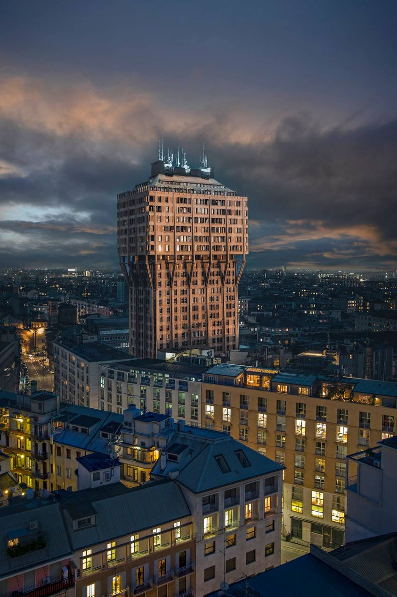

Make stories that stand out.
MA in Public and Corporate Communication, two years in the centre of Milan, between companies, institutions and politics.
How to apply
The programme
The Master's degree gives you a specialisation in public communication, corporate communication, marketing, advertising, and market and opinion research.